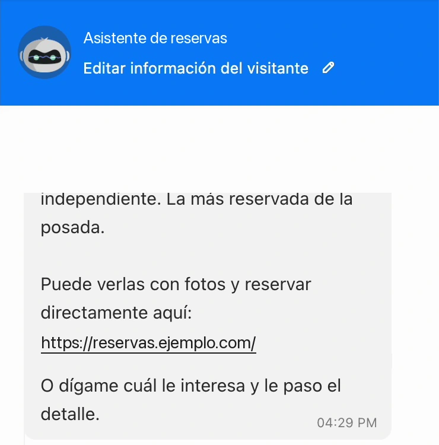
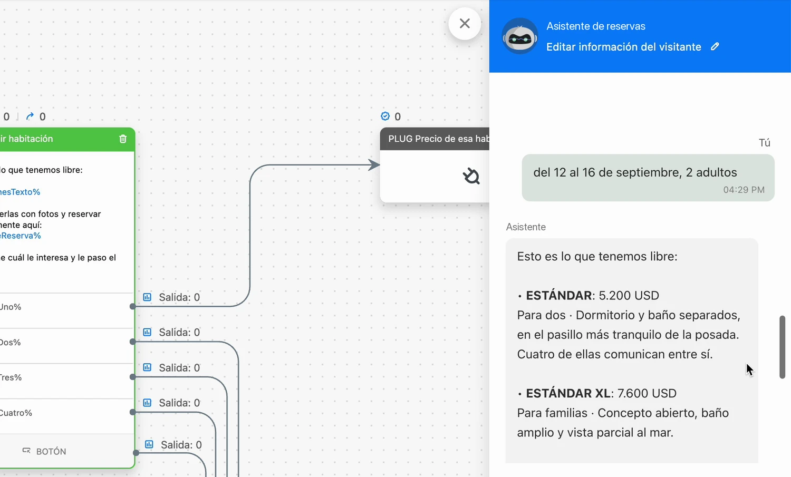

Proyecto 3 · Asistente de reservasTodos los proyectos
Un asistente que contesta por chat si hay sitio, con su precio, y da el enlace para reservar en el momento.
Lo hice para un grupo de alojamientos. Consulta la disponibilidad en su programa de reservas, contesta con las habitaciones libres y su precio, y envía el enlace para reservar con esas fechas ya puestas. Si no hay hueco, propone otras fechas. Guarda la solicitud y pasa la conversación a una persona cuando hace falta.
Lo que pregunta el cliente
Marta¿Tenéis sitio del 12 al 14 para dos personas?
AsistenteEsas noches están completas. Tengo libre del 15 al 17. ¿Le encaja?
MartaSí, del 15 al 17.
AsistenteHecho. Le paso con una persona del equipo para confirmarla.
Solicitud guardada en la ficha del cliente.
Lo que consulta el asistente
Lo que pideOcupadoLo que se le propone
La herramienta real




Qué cambia
Quien pregunta por unas fechas quiere saber si hay sitio, no esperar a que alguien lo mire.
Para el cliente
Recibe una respuesta con la disponibilidad real y un enlace para reservar al momento. Si no hay hueco, le propone otras fechas.
Para el equipo
Recibe la solicitud guardada en la ficha y la conversación cuando hace falta una persona.
Qué hice yo
- Diseñé la conversación y los casos difíciles: fechas ocupadas, mensajes escritos de cualquier manera y paso a una persona.
- Lo conecté con el programa de reservas para que conteste con disponibilidad y precio reales.
- Hice que cada consulta quede guardada en la ficha del cliente.
- Lo probé con guiones de conversación antes de entregarlo.
Hecho conZoho SalesIQ · Zoho CRM · Cloudbeds · OpenAI · Python